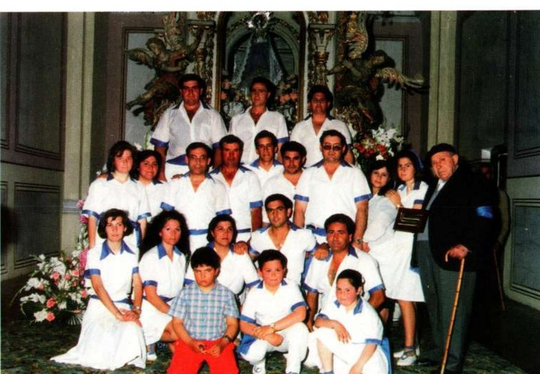

Las fiestas de la Virgen de la Casita
La romería del 10 de mayo, la Mariseca de agosto y las fiestas patronales de septiembre, de los programas de 1905 a hoy.
En esta página (7 apartados · 13 min de lectura)
Nuestra Señora de la Casita, patrona de Alaejos, tiene dos fiestas: la romería del 10 de mayo, aniversario de la aparición, y las Fiestas Patronales de septiembre, en torno al día 8, las mayores del año. Entre una y otra, desde el 14 de agosto, la Mariseca anuncia en la Plaza Mayor que llega el tiempo de fiesta. Los toros, que ocupan buena parte de esos días, tienen página propia.
La patrona y su cofradía
La historia de la ermita y de la imagen, los libros de la Cofradía de Pastores desde 1712 y la bajada de la Virgen a Santa María están en la página de la ermita de la Virgen de la Casita. Aquí, las fiestas.
La página de la ermita de la Virgen de la Casita desarrolla con detalle todo lo que sabemos de la patrona. Aquí recogemos lo esencial para entender las fiestas. Según la tradición, el 10 de mayo de 1490, en un año de sequía, la Virgen se apareció entre unas retamas a Catalina de la Cruz, una vecina pobre que buscaba hierbas. Los vecinos le levantaron una cabaña de maderos, la «casita» que le da nombre, y llovió. El relato escrito más antiguo es del jesuita Juan de Villafañe (Compendio histórico, Salamanca, 1726), y no se conoce ningún documento de la época de la aparición. La tradición oral añadió más tarde otros detalles: la Virgen habría marcado con los dedos el rostro de Catalina, las campanas habrían sonado solas, Catalina habría amasado siete panes con masa para uno. A Catalina se la llama a veces «santa», pero no hay ningún proceso de canonización. Una inscripción gótica del muro sur se ha leído como un lunes 10 de mayo de 1490, aunque no todos aceptan esa lectura.
Lo que sí está documentado es la antigüedad de la imagen. Es una talla sedente de unos 50 centímetros, con el Niño y una manzana, que Jesús Urrea fecha en la segunda mitad del siglo XIII, lo que la convierte en la obra más antigua del patrimonio religioso de Alaejos. Su corona de plata es obra del platero salmantino Diego Gómez, hacia 1760-1770. En 1672 un pleito llamaba a la ermita «de Nuestra Señora de la Visitación» (véase La ermita de la Virgen de la Casita). En 1699 la cofradía del Santísimo renunció a sus fiestas para que su dinero se destinara a reparar el santuario (Ojeda Nieto, programa de 1995). La Virgen de la Casita es, además, abogada de la lluvia: sus gozos piden agua y las rogativas siguen vivas.
La Cofradía de Pastores se rige por unas Reglas y Constituciones de 1712, aunque puede ser más antigua. Tenía rebaño propio y con él pagaba los danzantes, los cohetes y las andas. Sus libros recogen, por ejemplo, los 12 reales que pagó en 1714 al tamborilero y a la danza, las andas nuevas de 1719 y el capellán que nombró en 1720 con aprobación de la vicaría de Medina del Campo (Araújo, programa de 1988). Tuvo cofrades de varios pueblos de la comarca, y hoy solo los tiene de Alaejos. Su bandera es azul, con una M de galón dorado. En las vísperas de septiembre la cofradía sube con bandera, dulzaina y tamboril desde el Árbol de la Virgen hasta la ermita, y allí el mayordomo saliente entrega la vara al entrante. En 1986 ya se advertía que el recorrido, que antes se hacía a pie, se hacía en coche (Araújo, programa de 1986). El Árbol de la Virgen tenía su propia costumbre: los niños metían piedras en los huecos de su base para tener suerte. Lo derribó un temporal el 14 de febrero de 1941, y a comienzos de los años noventa se plantó otro (Lucas Castander, programa de 1996). Si quiere rezar la novena, puede descargar las ediciones de 1865 y 1952 y una de 2026 en castellano actual (véase Novena de la Virgen de la Casita).
La romería del 10 de mayo
El 10 de mayo, aniversario de la aparición según la tradición, es la primera fiesta de la patrona y la más religiosa de las dos. Hay novena, vísperas con repique (el 9 de mayo era día de tocar a pino), ofrenda de flores y reparto de la torta de Alaejos. Al mediodía se celebran misa y una procesión que da la vuelta a la ermita con la charambita (dulzaina y tamboril). En los últimos años se ha sumado una subida en bicicleta (véase La ermita de la Virgen de la Casita). Durante la vuelta a la ermita se sientan niños pequeños en las andas para ponerlos bajo la protección de la Virgen, y en 1987 se contaban por decenas (Benito Álvarez, programa de 1987). La novena más antigua que conocemos, la del capellán de San Pedro Isidro Santana Escudero (1782-1858), se rezaba del 2 al 10 de mayo.

Hay años en que la Virgen baja al pueblo. La imagen va en procesión a Santa María por calles con arcos de retama y flores, en recuerdo de la aparición. Allí se le da trato de alcaldesa de honor, y vuelve a la ermita un 10 de mayo con romería. Se dice que la bajada se hace cada diez años. La de 2010 fue el 4 de mayo, y la de 2020, aplazada por la covid, se celebró en 2022 (véase La ermita de la Virgen de la Casita).
La Mariseca, del 14 de agosto al 10 de septiembre
La Mariseca se coloca el 14 de agosto, víspera del 15, según el testimonio de un vecino recogido por este archivo. El programa de 2026 lo confirma: ese día las peñas cuelgan sus banderas en el balcón del Ayuntamiento, una de ellas pronuncia el pregón de la Mariseca y una charanga acompaña a la Mariseca hasta la Plaza Mayor. Allí permanece hasta el 10 de septiembre, cuando se retira. Ya en 1990 se escribía que el 15 de agosto, el día en que todo el pueblo iba al campo a ver los toros, se exponía la Mariseca como anuncio de las fiestas de la Casita (Jaime Caballero, programa de 1990). Durante casi un mes, la Mariseca marca el tiempo de fiesta del pueblo.
Las fiestas de septiembre, de 1905 a hoy
Las Fiestas Patronales en honor de Nuestra Señora de la Casita giran en torno al 8 de septiembre, la Natividad de la Virgen, que los programas llaman «Día de la Patrona». La novena va del 31 de agosto al 8 de septiembre (véase La ermita de la Virgen de la Casita). Para conocer su forma antigua contamos con un artículo excepcional. Adelio Castaño Casquero leyó los programas de 1905, 1907 y 1910 y reconstruyó unas fiestas que duraban del 7 al 10 de septiembre. Empezaban con una diana de la Banda Municipal y las dulzainas y seguían con gigantes y cabezudos, pelota en el Frontón Alegría, fuegos artificiales y teatro. El día 8 había encierro a las cinco de la mañana por las calles Tejares y Zabacos hasta la Plaza Mayor, misa en la ermita con procesión y baile de los devotos, y por la tarde novillada en la Plaza Mayor cerrada, con capacidad para unos 3.000 espectadores. Se ofrecía incluso un servicio de transporte a la ermita por 50 céntimos ida y vuelta. Su conclusión fue que aquellas fiestas, «en lo fundamental no han variado mucho», respecto de las de los años ochenta (Castaño Casquero, programa de 1984). Si quiere ver aquellas fiestas con más detalle, la página El siglo XX resume las de 1905.
El programa más antiguo que conserva este archivo es el de 1954, que se abre con una bienvenida dedicada a la patrona (programa de 1954). En 1971 los programas defendían una Comisión de Festejos que lo organizara todo, frente a las peñas o el Ayuntamiento por separado (García Martínez, programa de 1971). En 1987 las fiestas se describían como una mezcla de actos religiosos, corridas, encierros a pie y a caballo presididos por la Mariseca, peñas y verbenas, con un momento propio, la noche de las tracas. Esa noche los mozos pasaban bajo las chispas de cohetes y molinetes, y cuando al final aparecía un dibujo de la Virgen, los mozos «rivalizan por apoderarse del dibujo» (Benito Álvarez, programa de 1987). Hoy, la víspera de la patrona, una quema de fuegos y carretillas termina en la capilla de la Virgen. Es posible que sea la heredera de aquella noche, aunque no lo hemos comprobado.
La estructura actual, según el programa de 2026, tiene tres tiempos. La apertura oficial, el último sábado de agosto, comienza cuando una agrupación de dulzaineros va a buscar a las reinas a sus casas. Sigue la proclamación de las reinas, una de ellas infantil, y después el pregón. En 2019 lo dio Demetrio Madrid, primer presidente de la Junta de Castilla y León (El Español, 1-9-2019), y en 2026, una magistrada del Tribunal Superior de Justicia de Castilla y León natural del pueblo. Llega luego una semana de juegos y homenajes: calva, tanga, petanca y pelota a mano, un día infantil y el Día de nuestros mayores, en el que se entrega una placa a quienes cumplen ochenta años. El tercer tiempo es la recta final, del 5 al 10 de septiembre. Empieza con el desfile de peñas y sigue el día 7 con el izado de la bandera, el repique de campanas, la mojada popular y la paella. Esa tarde se celebran las vísperas de la Cofradía de Pastores con el cambio de la vara de mayordomo, y por la noche, los fuegos. El 8 de septiembre empieza con una diana a las seis de la mañana, un encierro a las ocho y la misa solemne a mediodía, con autoridades, reinas, cofradía y bailarines. Después la Virgen da la vuelta a la ermita mientras los bailarines bailan la charambita, y por la tarde hay festejo taurino. El día 10, tras el encierro a caballo y las vaquillas, la charanga lleva a todos de la plaza de toros a la Plaza Mayor, donde se retira la Mariseca, y con ella se dan por terminadas las fiestas (Programa de fiestas de 2026).
Una advertencia sobre lo que circula en internet. Una web agregadora de festivales describe las fiestas de 2025 con una «procesión por el centro», novilladas en un coso «renovado» y exhibiciones de paloteo. Ninguno de esos datos aparece en fuentes locales, y el primero contradice lo que todos los programas describen, que es una procesión alrededor de la ermita. Parece texto genérico y no debe tomarse como fuente.
Los pregoneros
El pregón abre las fiestas de septiembre. No hay una lista completa de quienes lo han dado, pero desde 1987 el Ayuntamiento les entrega la insignia con el escudo de la villa (véase Escudo, bandera y distinciones), y gracias a eso José Luis Pérez Muñoz pudo reunir estos nombres en 2008 (programa de 2008):
| Año | Pregonero | Entonces |
|---|---|---|
| 1987 | Fernando Zamácola Garrido | consejero de Agricultura de la Junta de Castilla y León |
| 1988 | Godofredo Garabito Gregorio | poeta y académico de Bellas Artes |
| 1989 | César Otero Villoria | secretario general de la Diputación de Valladolid |
| 1990 | Celso Vázquez Gallego | periodista de Televisión Española |
| 1991 | María Dolores Ortega Peinado | diputada a Cortes por Valladolid |
| 1992 | Carmen Lucas Lucas | directora general de Administración Territorial de la Junta |
| 1993 | Francisco González | director de los servicios informativos de Radio Nacional en Castilla y León |
| 1994 | Juan Colino Salamanca | diputado del Parlamento Europeo |
| 1995 | José Antonio Ortega Fernández | músico del grupo Candeal |
| 1996 | Julio Mangas Manjarrés | catedrático de Historia Antigua |
| 1997 | Antonio Monsalvo García | |
| 1998 | Javier Solana Sedeño | periodista de La Voz de Medina |
| 2000 | Leire Pajín Iraola | diputada en el Congreso |
| 2001 | Jesús Quijano González | procurador en las Cortes de Castilla y León |
| 2007 | Adelio Castaño Casquero | maestro y primer alcalde democrático, que recibió la insignia de oro |
La charambita y los danzantes
La tradición más propia es la de los danzantes. Bailar ante la Virgen de la Casita está documentado desde 1714. La costumbre decayó y en el siglo XX la recuperó un grupo de vecinos. Hoy la mantiene la Asociación de Bailarines, con un estandarte azul y blanco en el que está bordada la Virgen. Los bailarines bailan al son de la dulzaina y el tamboril desde que la imagen sale de la ermita hasta que vuelve a entrar (Araújo, programa de 1986). Su baile se llama la charambita, el mismo nombre que se da en Alaejos a la dulzaina (véase La ermita de la Virgen de la Casita). Hay grabaciones antiguas. La Fundación Joaquín Díaz registró el himno, las dianas, la danza de la charambita, los gozos, las rogativas y la salve, y esas grabaciones pueden escucharse con licencia libre en Wikimedia Commons (véase Dichos, cabañuelas y habla).


Para seguir leyendo
- Adelio Castaño Casquero, «Las fiestas en Alaejos, a principio de siglo» (1984).
- Adolfo M. Araújo, «La bandera de la cofradía de pastores, el estandarte de la asociación de danzantes y la corona antigua de Nuestra Señora de la Casita» (1986).
- José Manuel Benito Álvarez, «Mitos y fiestas en la villa de Alaejos» (1987) y «Mitos y fiestas en la villa de Alaejos (II)» (1988).
- Adolfo M. Araújo, «Curiosidades históricas sacadas de los libros de la cofradía de pastores de la Virgen de la Casita» (1988).
- José Ojeda Nieto, «Las antiguas fiestas de Alaejos» (1995).
- Fidel Lucas Castander, «El árbol de la Virgen» (1996).
- En esta web: La ermita de la Virgen de la Casita, la novena y El siglo XX.
- Programa de fiestas de 2026.
Cómo citar esta página
Amigos de Alaejos, «Las fiestas de la Virgen de la Casita», https://www.amigosdealaejos.org/fiestas-y-eventos/fiestas-de-la-virgen-de-la-casita/ (revisión del 15/11/2026).